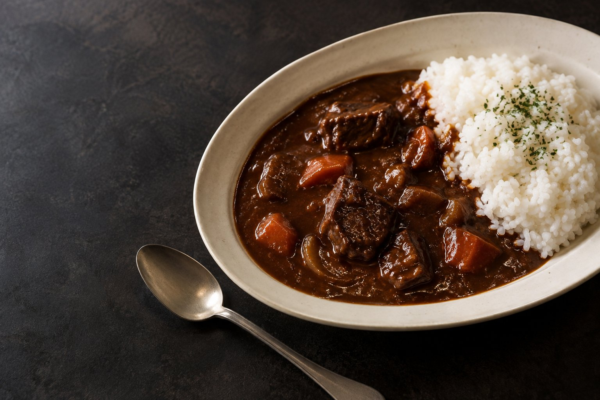
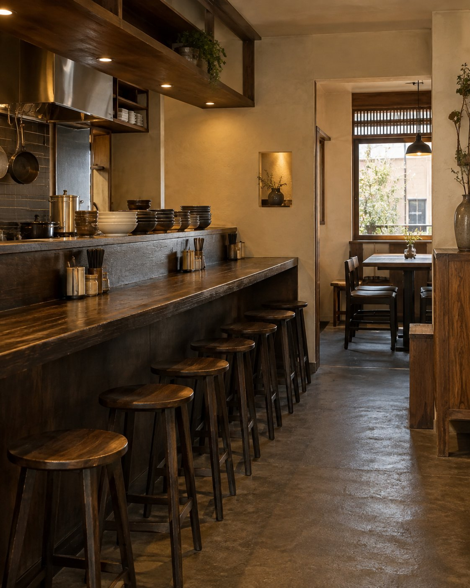
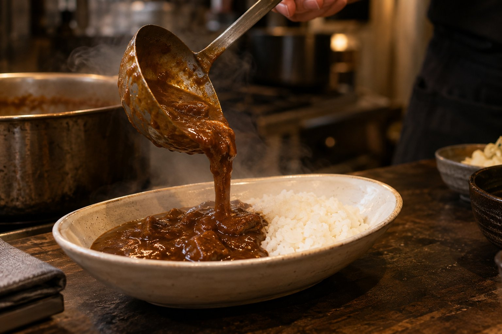

OPENING2026.11.20開業予定 / 京都・三条
PHOTO: CONCEPT IMAGE01 — OUR STORY
私たちについて
いつもの街に、
立ち寄りたくなる
一軒を。
お仕事の合間にも、京都を歩く一日にも。
気取らず味わう、欧風カレーの時間。
京都・三条に生まれる、小さなカレー店。
お一人でのランチから、お二人でのお食事、
ご家族とのひとときまで。
2026年11月20日、開業予定です。


03 — OUR CURRY
ひと口の、その先に。
欧風カレーの楽しみ。
ソース、食材、そして調理。
お店ならではの魅力を、
ひとつずつお伝えしていきます。
01
カレーソース
詳細は開業前に公開予定02
食材のこと
詳細は開業前に公開予定03
厨房から
詳細は開業前に公開予定04 — A LITTLE PLACE
店内のご案内
小さな店の、
心地よい距離感。
1階は6席、2階は12席。
三条通近くの、全18席の欧風カレー店です。
1F06席
2F12席
05 — NEWS
お知らせ
開業予定京都・三条に、欧風カレー店が誕生します。
＋
2026年11月20日の開業に向けて準備を進めています。正式な店名、営業時間、詳しい住所は決定次第ご案内します。
※募集情報に基づく提案用のお知らせです。
06 — VISIT US
京都・三条で、
お待ちしています。
SANJO
2026.11.20 OPEN予定
京都市中京区
三条通近く
- 店名
- 正式名称は近日公開
- 住所
- 京都市中京区・三条通近く
番地・最寄り駅は確定後にご案内 - 営業時間
- 決定次第ご案内
- 定休日
- 決定次第ご案内
- 席数
- 18席（1階6席・2階12席）
- 電話番号
- 決定次第ご案内
- お支払い
- 対応方法は決定次第ご案内
07 — QUESTIONS
よくあるご質問
オープンはいつですか？＋
2026年11月20日の開業を予定しています。変更がある場合は、お知らせに掲載します。
子どもでも食べられるカレーはありますか？＋
甘口カレーをご用意する予定です。原材料やアレルギーの詳細は、正式メニュー公開時にご確認ください。
席数を教えてください。＋
1階6席、2階12席の合計18席です。座席レイアウトの詳細は開業前にご案内します。
予約やテイクアウトはできますか？＋
予約・テイクアウトの受付方法は準備中です。決まり次第、このサイトでご案内します。
08 — CONTACT
お問い合わせ
店舗についてのお問い合わせはこちらから。
デモのため送信はされません。
個人情報を入力せず、操作をご確認ください。